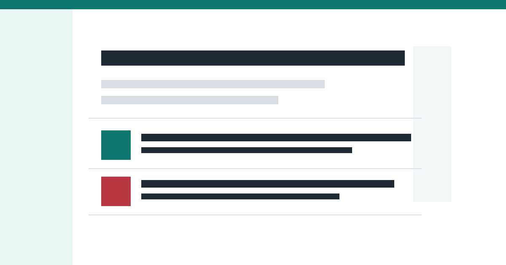

AIニュース
AI技術、研究、規制、企業動向を中心に扱います。
- 最新更新日
- 2026年4月18日
- 最新記事
- 2026年4月18日 AIニュース解説
AIニュース、AIツールニュース、一般ニュースを日別に整理し、重要度と影響を読みやすくまとめる静的ニュース解説サイトです。
Daily News Commentary
AIニュース、AIツールニュース、一般ニュースを日別に整理し、重要度と影響を読みやすくまとめる静的ニュース解説サイトです。

各カテゴリの最新日付と説明です。カテゴリ追加時は content 配下にディレクトリを増やし、必要に応じて設定へ表示名を追加します。
AI技術、研究、規制、企業動向を中心に扱います。
生成AIツール、業務活用、プロダクト更新を中心に扱います。
社会、経済、国際、テクノロジー全般の主要ニュースを扱います。
登録済みコンテンツから新しい順に表示しています。
AIニュース / 2026年4月18日
サンプルデータです。AI活用の評価、ガバナンス、現場実装をめぐる論点を日次レポート形式で整理しています。
1位: サンプル：AIモデル評価基準の見直しが進む
AIツールニュース / 2026年4月18日
サンプルデータです。AIツールのチーム利用、ワークフロー連携、レビュー機能に関する話題を整理しています。
1位: サンプル：AI文書作成ツールにチームレビュー機能が追加
一般ニュース / 2026年4月18日
サンプルデータです。社会、経済、テクノロジーの横断的な動きを、日次ニュース形式で整理しています。
1位: サンプル：公共サービスのオンライン手続き拡充が議論に